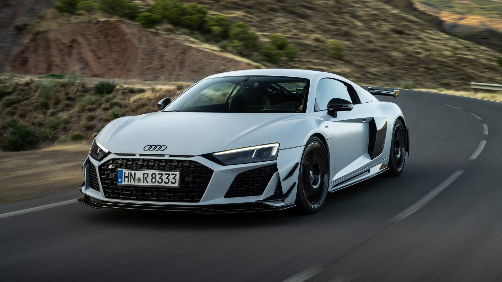
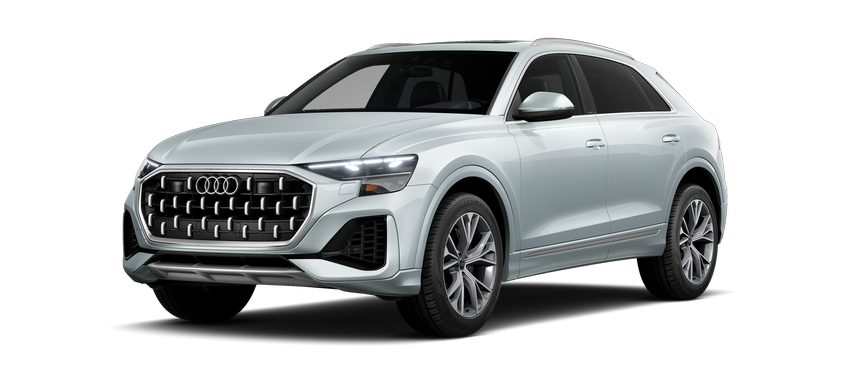
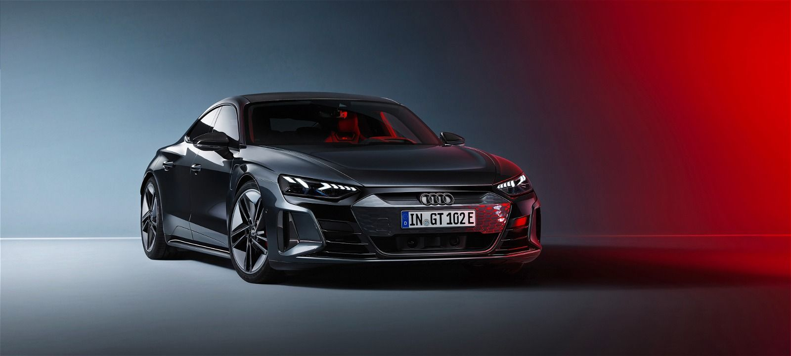
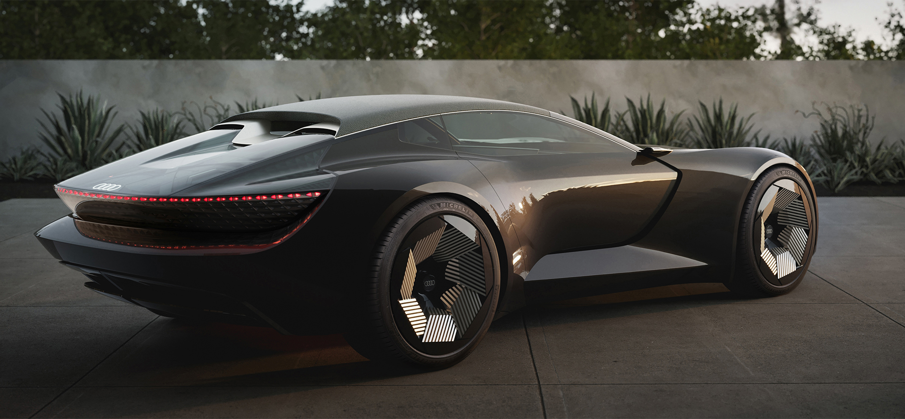
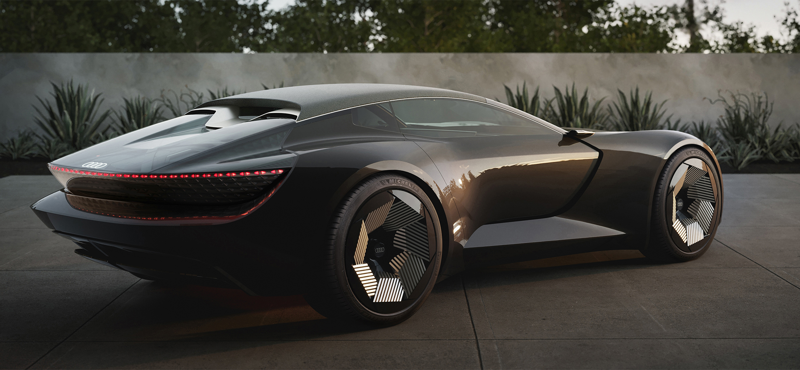

Audi mashinasi haqida
Audi AG ([ˈɑʊdɪ] , lotin tilidan audi — „tinglash“[1])
— Volkswagen guruhi tarkibiga kiruvchi nemis avtomobil kompaniyasi[2].
Audi brendi ostida avtomobillar ishlab chiqarishga ixtisoslashgan



Audining hozirgi koʻrinishi, DKW , Horch , Audi va Wanderer brendlari ostida
avtomobil va mototsikl ishlab chiqaradigan toʻrtta kompaniyaning birlashishi natijasida hosil boʻlgan.
 

Xorch 1899-yilda oʻzining birinchi shaxsiy korxonasini (Horch & Co.)
tashkil etdi va kreditorlar uni biznesdan olib tashlagach, 1909-yilda birinchi avtomobilini ishlab chiqargan.
Nemis tilidan tarjima qilingan Horch-"tinglash" degan maʼnoni anglatadi.